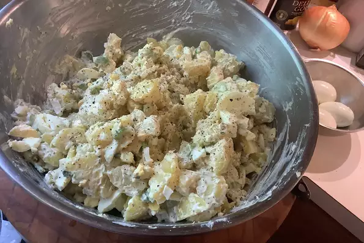

Egg salad Recipe

Most of the work that goes into making this potato salad recipe is preparing the ingredients. After that, you
simply combine them gently in a large bowl, cover, and chill to let the flavors develop.
Ingredients
- Potatoes
- Eggs
- Celery
- Onione
- Relish
Steps
- Bring a large pot of lightly salted water to a boil. Add pasta and cook for 8 to 10 minutes or until al
dente;
drain.
- In a medium bowl, combine mozzarella, Cheddar and ricotta; stir well. In 9x13 inch pan, alternate layers of
noodles, meat mixture and cheese mixture until pan is filled.
- Bake in preheated oven for 30 minutes, or until cheese is melted and bubbly.